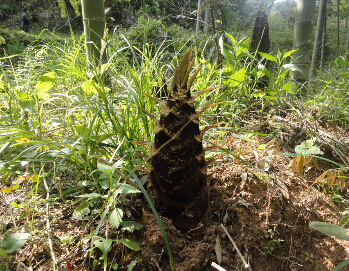
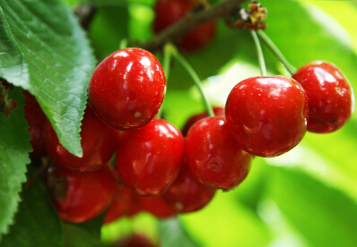
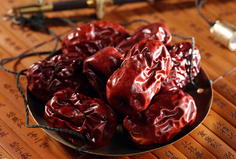
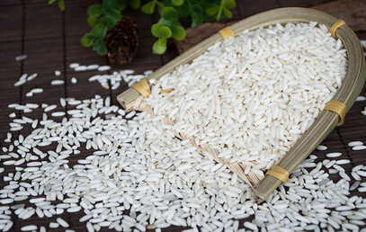
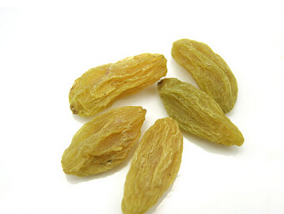
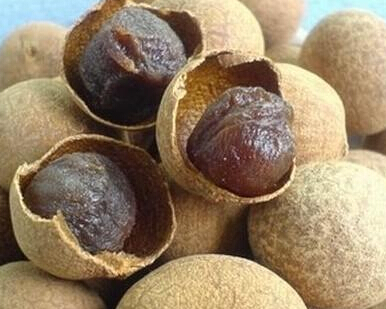
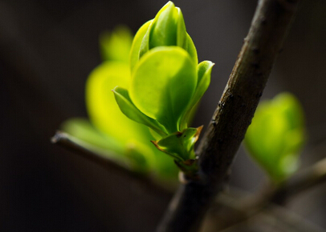
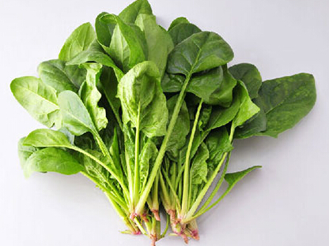

说到吃春，不得不提的就是春笋。春笋脆嫩鲜美，可嚼出清香和甘醇来，被誉为“
“春气之应，养生之道也。”“吃春”的重点不仅在于“吃”，“喝”也同样重要。春季第一茶，亦花亦茶——它就是大家熟悉的玫瑰花。
玫瑰花茶性微温，具有活血调经、疏肝理气、平衡内分泌等功效，对肝与胃有调理作用，并能消除疲劳、改善体质，适于春季饮用。此外，具有“解郁圣药”美誉的玫瑰花茶，还能让你的心情“多云转晴”。不仅如此，玫瑰花茶还能有效缓解心血管疾病，并能美容养颜，有助改善皮肤干燥、消除色斑、改善肤色。取一个透明的玻璃杯，放入15克玫瑰花，加入开水，浸泡5分钟后即可代茶随意饮用，当然，在饮用时您还可以根据个人口味调入冰糖或
需要说明的是，玫瑰花最好不要与茶叶泡在一起，因为茶叶中含有大量鞣酸，鞣酸会影响玫瑰花舒肝解郁的功效。此外，因玫瑰花活血散淤，故月经量过多的朋友经期最好不要饮用。

都说“春困秋乏夏打盹”，眼下正是春困的时节。不过幸好，颜色红润的樱桃开始大量上市，酸酸甜甜的口感，丰富的营养成分，不啻为一剂提神醒脑解春困的良药。
樱桃素有春季第一果之称，其性温、味甘、微酸;入脾、肝经，能补中益气，祛风胜湿，主
需注意的是，樱桃属火，不可多食，身体阴虚火旺应忌食或少食。吃不了樱桃，

我国古代名医孙思邈说过:“春日宜省酸增甘，以养脾气。”意思是说，春季宜少吃酸的，多吃甜的。中医认为春季为肝气旺盛之时，多食酸味食品会使肝气过盛而损害脾胃，所以应少食酸味食品。而人们在春天里的户外活动比冬天增多，体力消耗较大，需要的热量增多。但此时脾胃偏弱，胃肠的消化能力较差，不适合多吃油腻的肉食，因此，热量可适当由甜食供应。红枣正是这样一味春季养脾佳品。

糯米糕补体力。糯米有补中益气、补充营养的作用，寒凉的早春天气吃糯米，可温补脾胃、养血安神，适合脾胃气虚、常腹泻的人，也就是适合天冷时容易肚痛腹泻或肚子冰凉的人吃，但糯米不易消化，若是易消化不良的人，1天吃约半个手掌的量即可。


龙眼干安神肝血不足、气血循环不佳者，易在春天睡不好、没精神。而龙眼干可入脾养血，脾胃养足了，肝血、肝气也较足，晚上睡不好、易头晕的人可多吃。不过常口干舌燥、易上火、体质较燥热的人则要少吃，建议1天不要吃超过半个手掌的量。
春芽
春日食春芽是大自然的赐予，中医经典著作《黄帝内经》说要“食岁谷”，意思就是要吃时令食物。春天里所有的植物都生发出新鲜的嫩芽，其中，可以食用的春芽有很多，如

春天里吃食的菜蔬还有菠菜，菠菜一年四季都有，但以春季为佳，“春菠”根红叶绿，鲜嫩异常，最为可口。春季上市的菠菜，对解毒、防春燥颇有益处。中医也认为菠菜性甘凉，能养血、止血、敛阴、润燥。因菠菜含草酸较多，有碍钙和铁的吸收，吃菠菜时宜先用沸水烫软，捞出再炒。